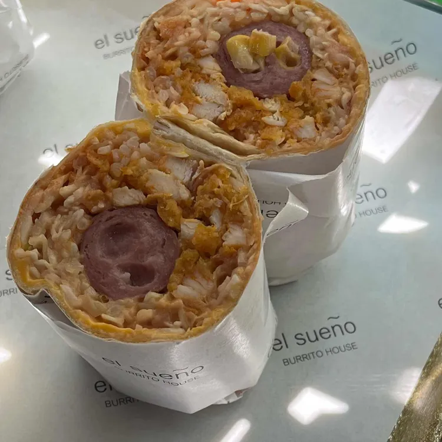
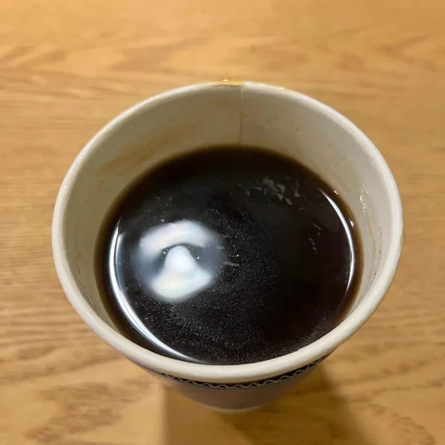
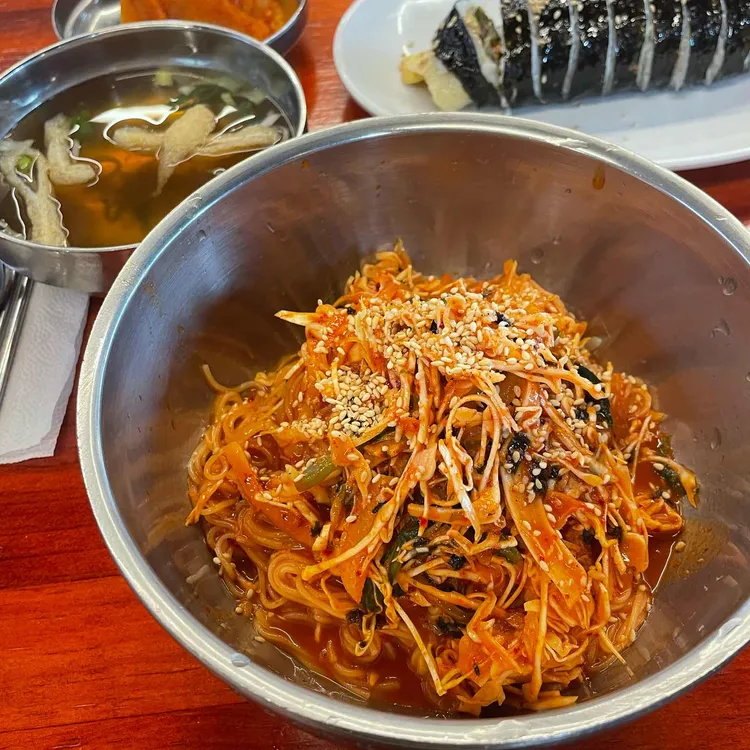
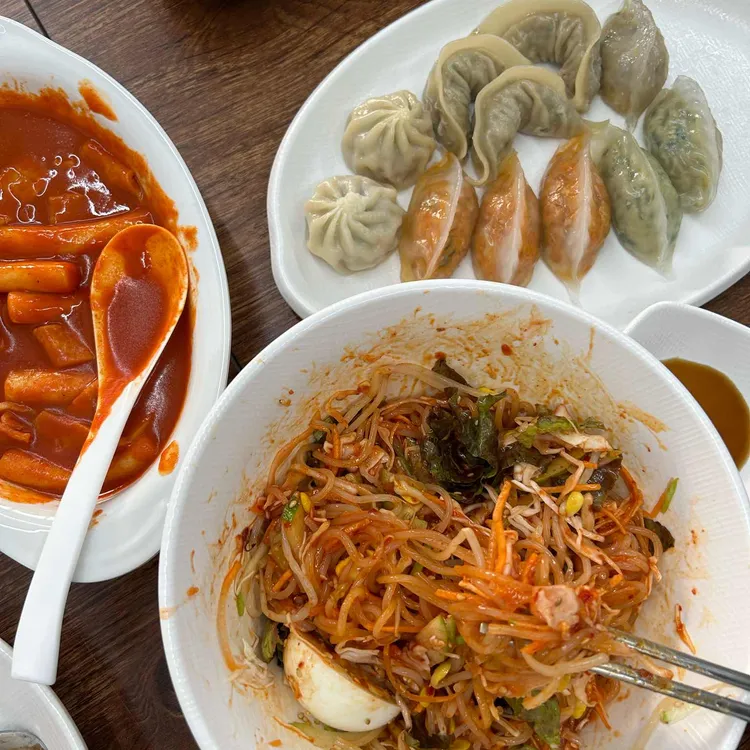

개요
덕성여대는 서울 도봉구 삼양로 144길 33에 있습니다.
주변에 맛있는 음식점이 널려 있습니다.
아래의 맛집 리스트는 다이닝코드에서 덕성여대 맛집으로 검색한 210곳에서 뽑았습니다.
덕성여대 맛집 목록(from.다이닝코드)
맛집 상세 정보
| 대표이미지 | 상호 | 구분 | 평점 | 위치 | |
|---|---|---|---|---|---|
| 산책 | 알밥, 치즈 알밥 | 4.1 | 서울특별시 도봉구 삼양로144길 18 | ||
|  | 엘수에뇨 | 부리또 | 4.7 | 서울특별시 도봉구 삼양로142길 3 | |
| 블랙다운커피 | 커피, 라떼 | 5 | 서울특별시 강북구 삼양로 528-1 1층 | ||
| BOOM떡볶이 | 떡볶이, 분식 | 4.5 | 서울특별시 강북구 삼양로 541 | ||
| 미뇨리 | 돈까스, 함박스테이크 | 4.6 | 서울특별시 도봉구 삼양로144길 18 2층 | ||
| 양국 | 일본라멘, 돈까스 | 4 | 서울특별시 도봉구 삼양로538-6 1층 | ||
| eeeyo | 요거트, 그릭요거트 | 4.5 | 서울특별시 도봉구 삼양로142길33 1층 | ||
|  | 카페레 | 카페, 와플 | 5 | 서울특별시 도봉구 삼양로144길 9 | |
|  | 미아리 우동집 덕성여대점 | 우동, 열무국수 | 3.7 | 서울특별시 강북구 삼양로543 | |
|  | 기분좋은 음식들 | 분식, 만두 | 5 | 서울특별시 도봉구 삼양로531 1층 |